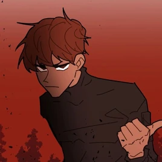

Tyler Hernandez is a protagonist in School Bus Graveyard. He debuted in Episode 1, and is an incredibly abrasive and grumpy teenage boy. He's always seen around his twin sister Taylor.
Tyler is an abrasive boy with a short fuse and what maybe anger issues. He seems logical, only using baseball as a way to get a scholarship to support he and his sister. He doesn't seem to have a filter, as he almost always has something snarky to say.
Tyler Hernandez is a tall boy, standing at 5'10. He has caramel colored skin and thin angry eyebrows and chocolate brown eyes. He has short chocolate brown hair with bangs that swirl to the right side of his head. His hair spikes out slightly similar to his twin sister, Taylor. He's often seen matching outfits with his sister Taylor, but he often wears casual clothes such as a T-shirt and jeans, often wearing a varsity jacket over them. In the phantom dimension, he can be seen wearing the black protective suit that was purchased by Aiden.